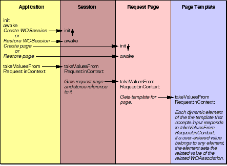

PATH
WebObjects 4.0 Documentation >
WebObjects Developer's Guide
 Table of Contents
Table of Contents  Previous Section
Previous Section
Handling Component Action Requests
The first phase of the component action request-response loop (see Figure 22) synchronizes the state of the request component with the HTML page as submitted by the user. In this phase, the appropriate dynamic elements extract the values that users enter and the choices they make in the request page and assign them to declared variables.
For example, if the user clicked a checkbox, the dynamic element that represents that checkbox must be set to the "checked" state. In other words, the checked attribute of the appropriate WOCheckbox dynamic element must be set to YES.

Figure 22. Taking Values from the Request
When the component action request handler receives the handleRequest: message from the application, it does the following:
- It creates the WOResponse and WOContext objects that will be needed.
- It invokes the application's awake method.
- It determines which session and which request page are associated with the request, as described next.
Table of Contents  Next Section
Next Section